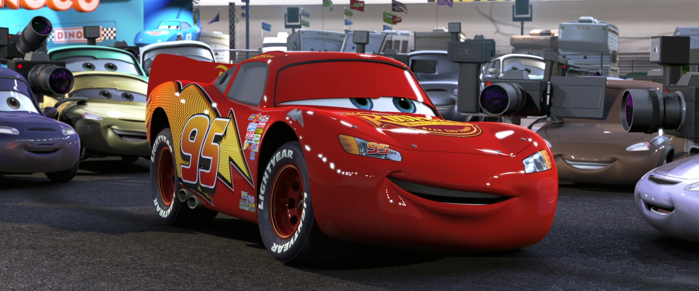
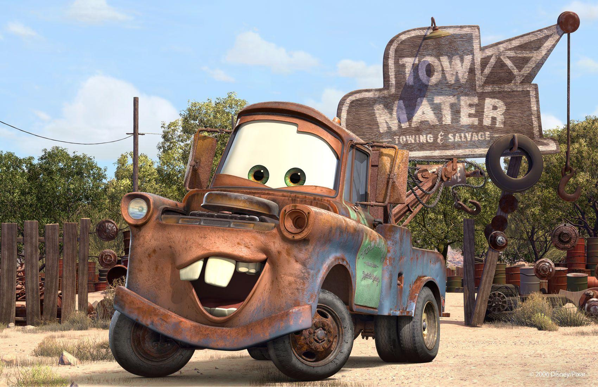
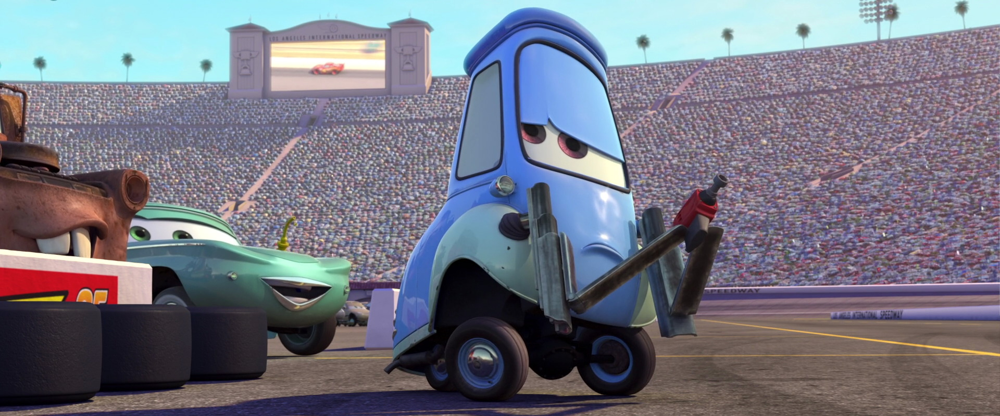
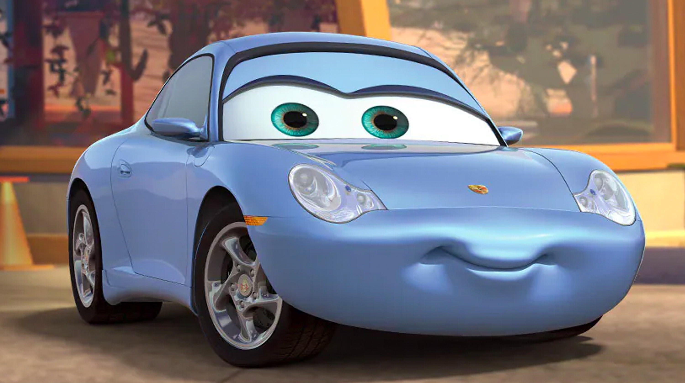
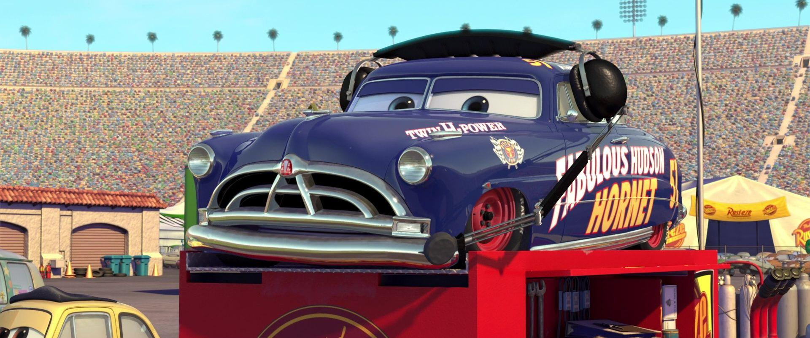

Roles de personajes
Acá veremos algunos personajes, su rol y un poco de lo que hacen en las diferentes peliculas
- Rayo McQueen:
Es el personaje principal, un corredor profesional que se pierde en un pequeño pueblo.
No está basado en un auto especifico, pero es una combinación de el Ford GT40 de Ford,
Dodge Viper SRT10 y el Chevrolet Corvette C5 R - Sir Tow Mate "Mate":
Es el mejor amigo del Rayo, y protagonista de la segunda pelicula.
Está basado en Chevrolet Task-Force 3800. - Guido:
Es un auto que vende llantas, pero el Rayo lo integra a su equipo de pits por que
es el mejor cambiador de llantas del mundo. No tiene un modelo de auto en especifico
pero está basado en un montacarga tradicional. - Sally Carrera:
Sally es una chica de Radiador Springs, es conocida por tener un vinculo amoroso con el personaje principal, el Rayo.
Está basada en un Porsche 911 Serie 996 Carrera, de ahí su apellido Carrera . - Hudson Hornet:
Tambien conocido como el Fabuloso Hudson Hornet, era un corredor el cual por un accidente
no pudo competir más, y se une al equipo del Rayo para ayudarlo a ganar la Copa Piston.
Su modelo es literalmente el Hudson Hornet de 1951.




